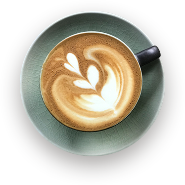

opps! page not found
The page you are looking is not available or has been removed. Try going to Home
Page by using the button below.

The page you are looking is not available or has been removed. Try going to Home
Page by using the button below.